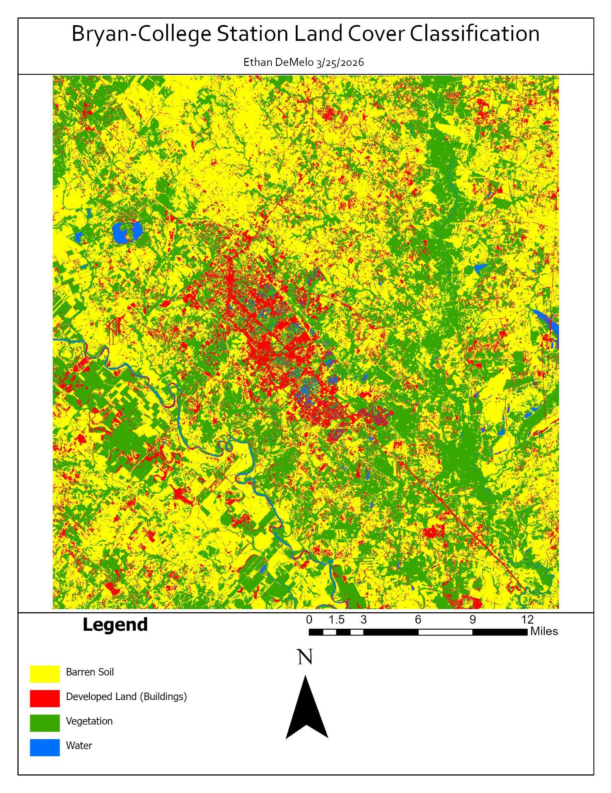
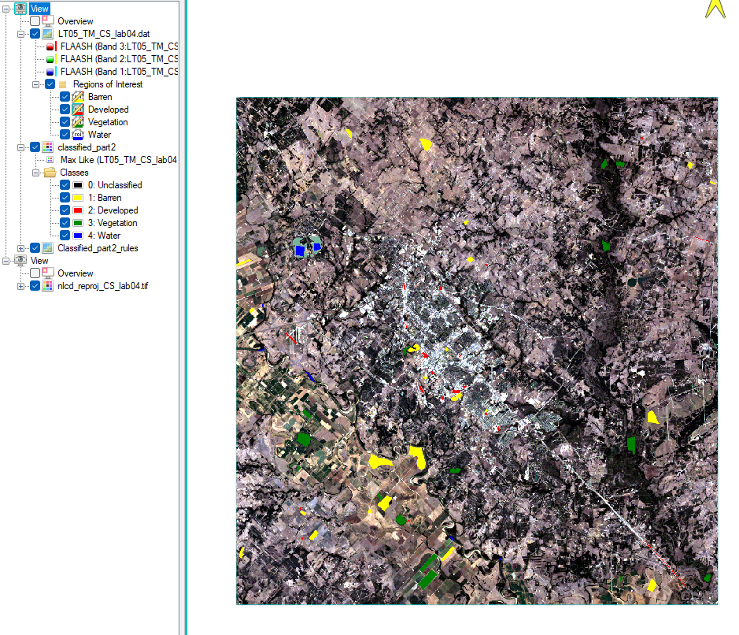

Image and reference data
Source imagery, selected training regions and the supplied NLCD comparison.
GEOG 461 / Lab 4 / Spring 2026
I selected training areas and used Maximum Likelihood Classification to map land cover around Bryan–College Station, then compared the result visually with NLCD.


Source imagery, selected training regions and the supplied NLCD comparison.
Choose representative regions and apply a maximum-likelihood classifier.
Map the classes and inspect confusions between urban pixels and water.
Vegetation and major water features were recognizable, while some urban pixels were labeled as water. The lab discusses spectral similarity and training-area representation as possible sources of confusion.
This is a visual comparison with the supplied NLCD data, not an independent quantitative accuracy assessment. I would add an independent reference sample and confusion matrix before making numerical accuracy claims.